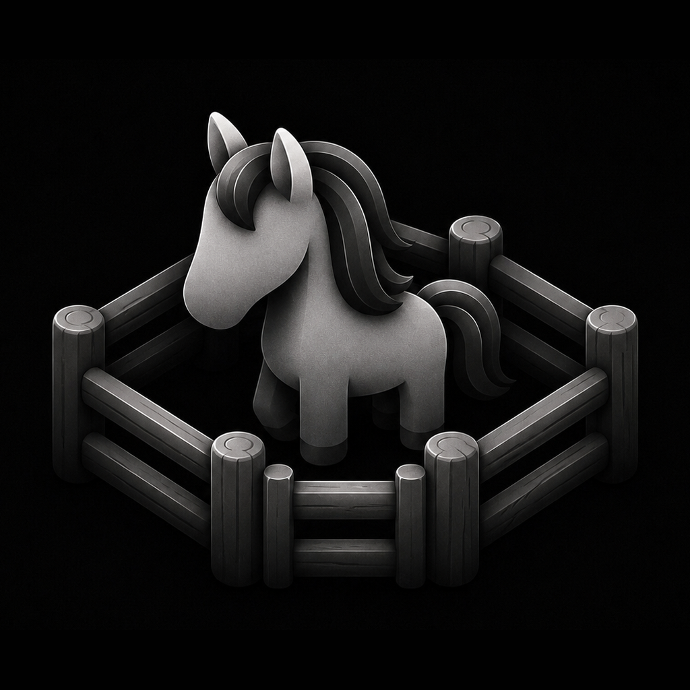
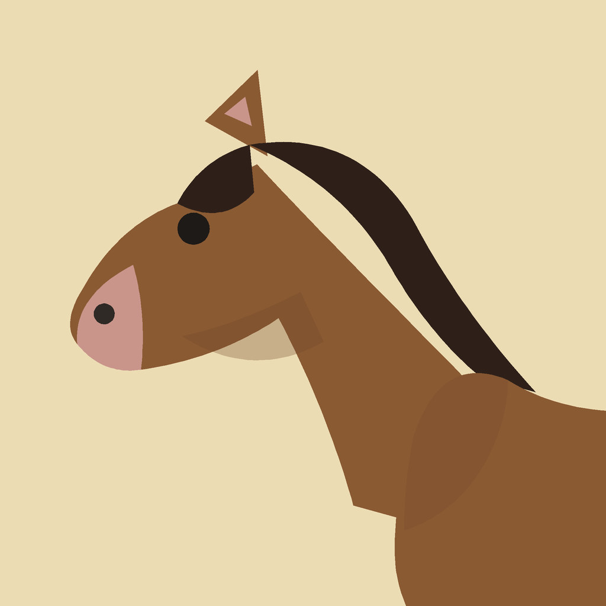
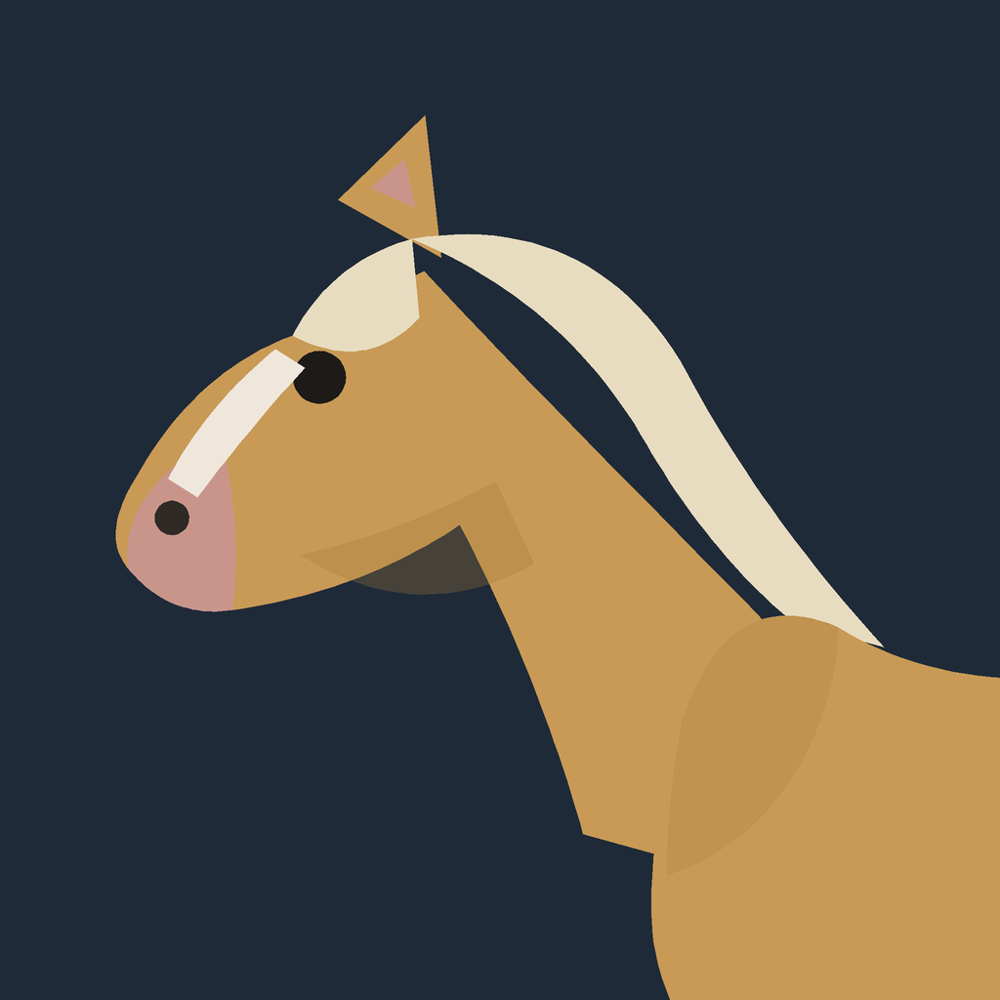
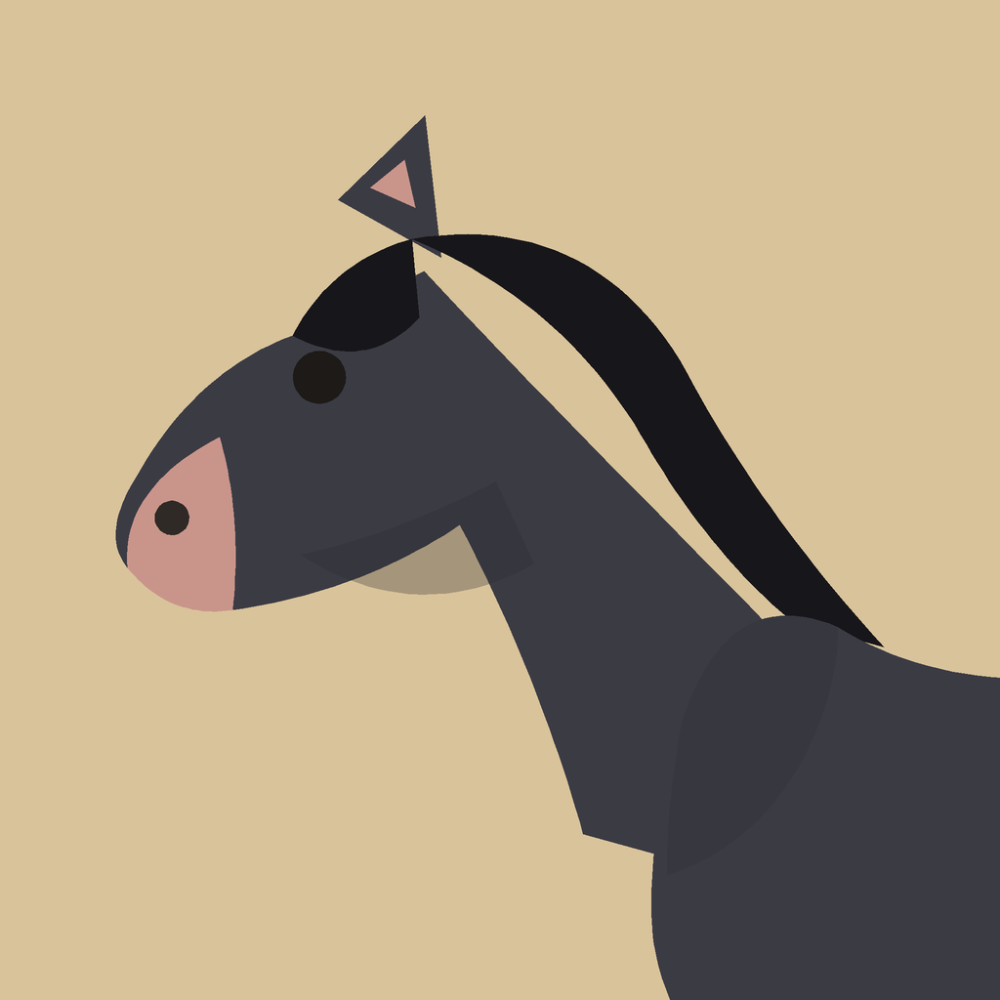
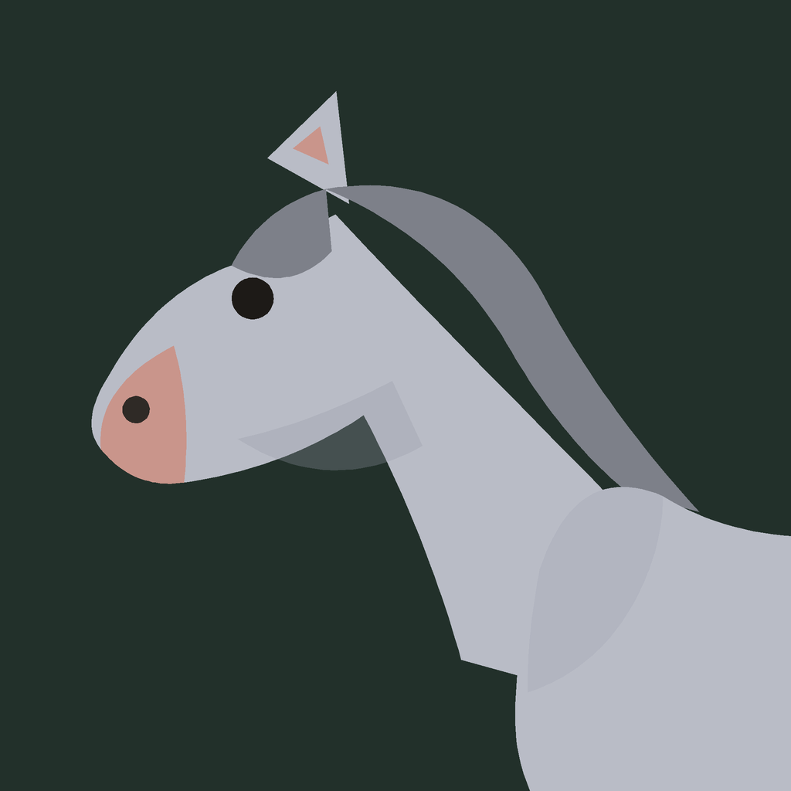

‹ Settings
Appearance
App Icon

Original
Current icon (unchanged)
✓

Bay
Horse alternative · treatment A

Palomino
Horse alternative · treatment A

Black
Horse alternative · treatment A

Grey
Horse alternative · treatment A
Choose the Corral app icon. Original restores the current default icon. Changes apply to the Home Screen after you confirm.
PROTOTYPE mockup — not a live Settings screen; changes no real icon